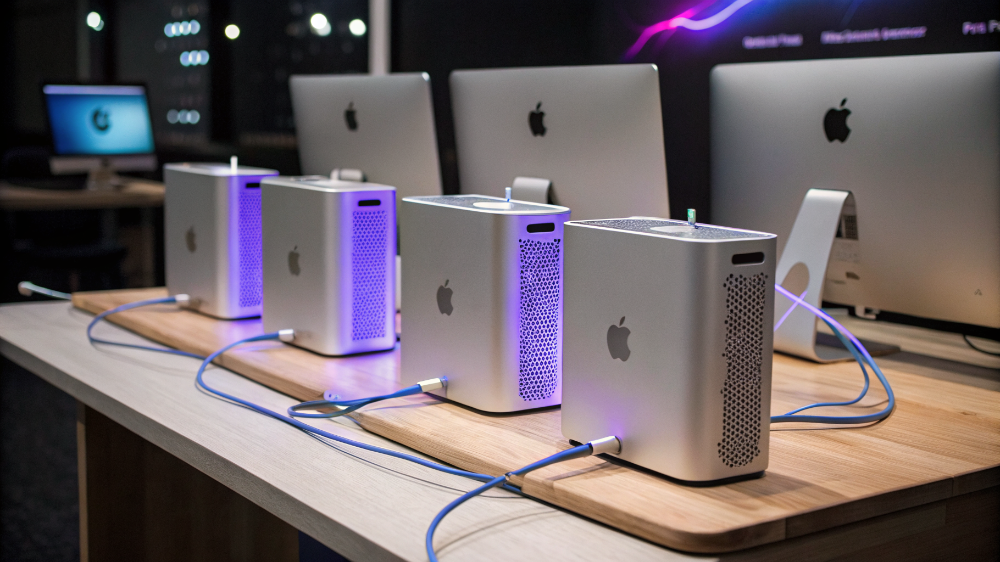
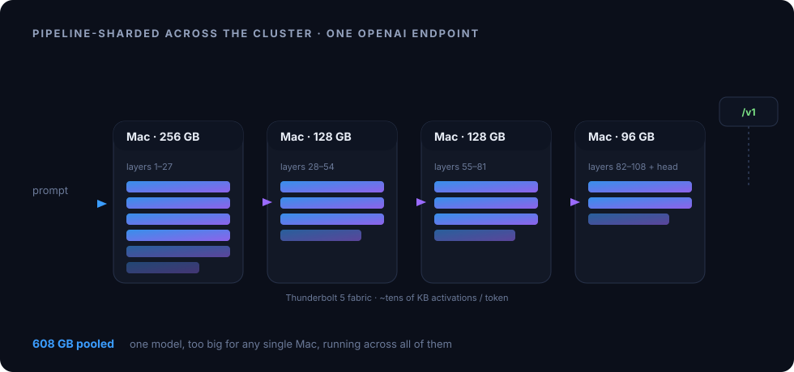

mac-ssi fuses the CPU, GPU, Neural Engine, memory and storage of every Mac you own into a single compute fabric — over Thunderbolt 5, Ethernet, or Wi-Fi. Run any workload across all of them, unchanged.

You own more Macs than you use at once. mac-ssi makes them act as one machine — memory spans every node's RAM, compute lands on whichever Mac has idle cores, GPU or ANE, a job appears as a single PID. Unmodified software just sees a bigger computer.
# run any binary on the best node — by free CPU/GPU/RAM, locality, or energy $ ssi run ./render_batch --gpu --min-mem 65536 # place work where it costs the least power $ ssi run --mode energy ./nightly_job # one process table across every Mac $ ssi ps
Rendering, simulation, builds, data processing, batch compute, training, inference — anything bottlenecked by a single machine gets the whole pool.
CPU, GPU, Neural Engine, RAM and storage pooled across nodes. One PID, one memory space, one filesystem — no distributed-programming model.
Thunderbolt 5 with RDMA for max throughput, plain Ethernet, or just shared Wi-Fi. The fabric adapts to whatever connects your Macs.
Allocate across the pool's combined RAM with MOESI coherence and per-region consistency. Load data bigger than any one Mac.
Predictive prefetch, write coalescing, tiered hot/cold memory, and run-where-the-data-lives placement cut cross-node latency 10–100×.
Joules metered per node. --mode energy runs work where it costs the least power — Apple Silicon's perf/watt, pooled.
No MPI, no job manager, no rewrite. ssi run ./anything is ssh for your whole pool, with a scheduler.
Making separate machines act as one is bound by the link between them. Apple's on-die UltraFusion runs at 2.5 TB/s; the wire between Macs is far slower — 10 GB/s on Thunderbolt 5, less on Ethernet or Wi-Fi. mac-ssi closes that gap in software so the pool behaves like one computer.

Because the fabric pools GPU memory, a model too big for any single Mac just runs across the cluster — sharded automatically, served behind one OpenAI-compatible endpoint. It's an application of mac-ssi, not the point of it.
$ ssi serve some-large-model --port 8080 $ curl localhost:8080/v1/chat/completions -d '{"messages":[...]}' # plain OpenAI API
ssi command.| Command | What it does |
|---|---|
ssi run ./workload | Run any binary on the best node, scheduled by CPU / GPU / ANE / RAM / locality / energy |
ssi ps · kill | One process table across every Mac |
ssi memory | Distributed shared memory across the pool's combined RAM |
ssi gpu · ane | Pool and dispatch to GPU / Neural Engine across nodes |
ssi fs | One virtual filesystem spanning every node's storage |
ssi status · nodes · resources · topology | See the pool — and the fabric links — as one machine |
ssi serve <model> | example workload — distributed inference → one OpenAI endpoint |
$ brew install --cask openie-dev/mac-ssi/mac-ssi $ ssi up # start the agent — peers auto-discover $ ssi status # your pool, as one machine
Apple Silicon · connects over Thunderbolt 5 (RDMA), Ethernet, or Wi-Fi · macOS 26.2+ unlocks TB5 RDMA.